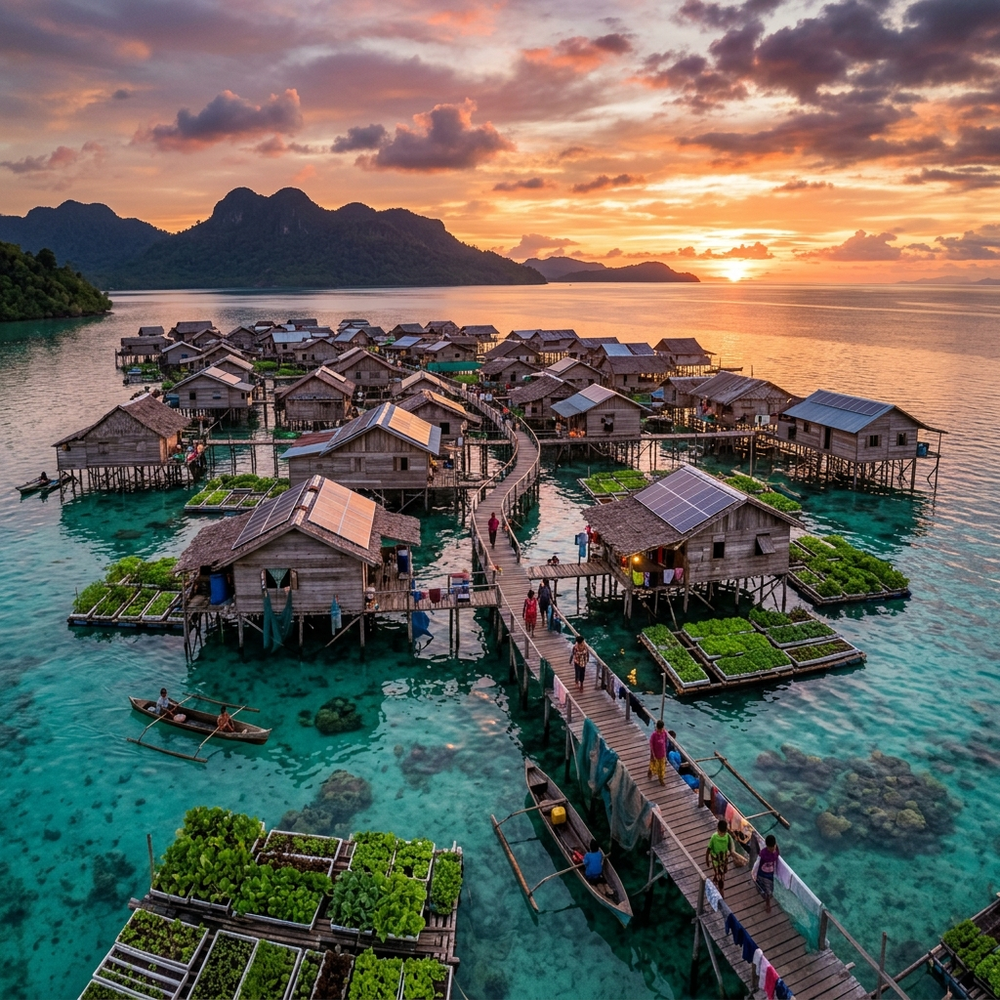
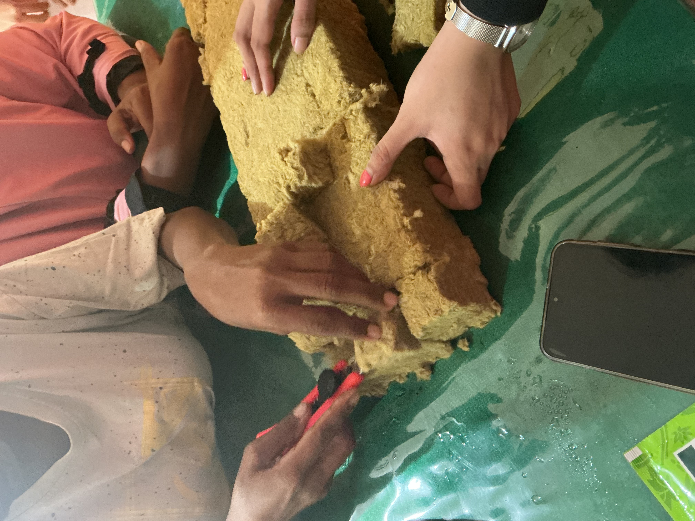
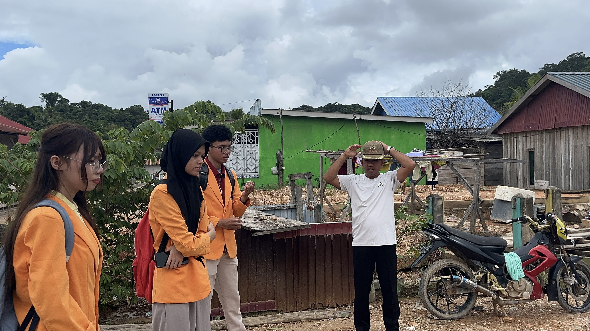
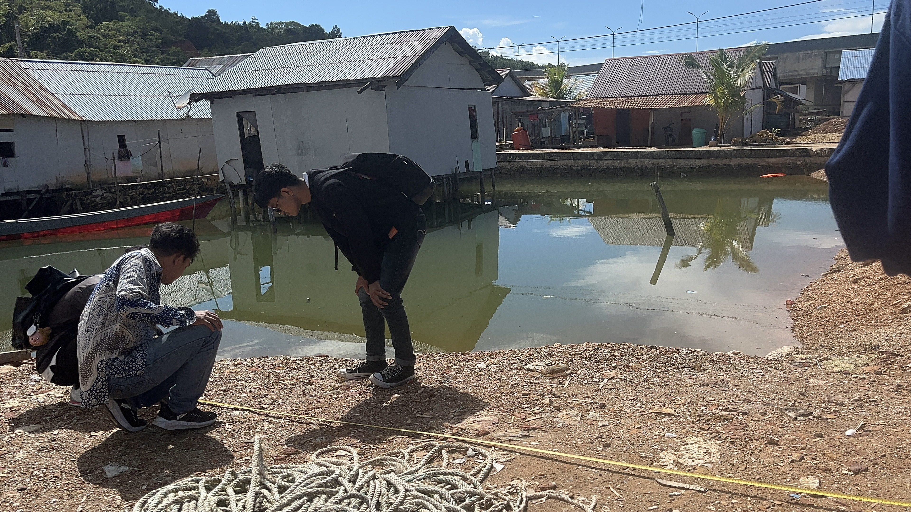
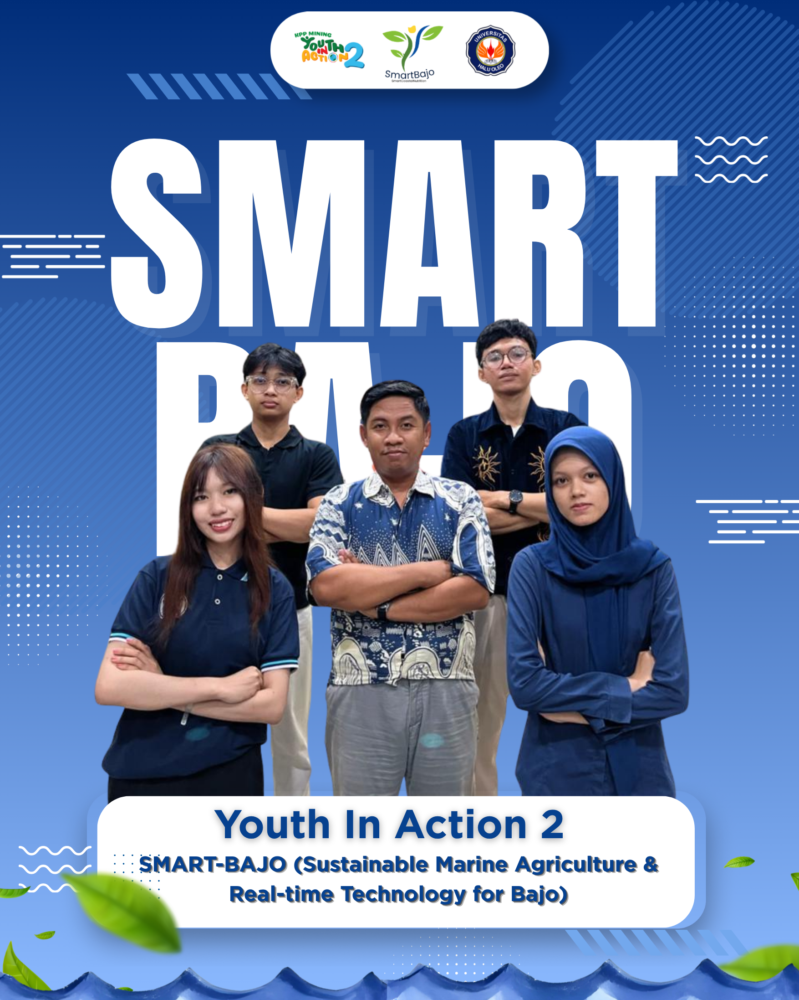

Sistem cerdas berbasis AI dan IoT untuk optimalisasi budidaya sayuran hidroponik pesisir laut. Memantau nutrisi, salinitas, dan kesehatan tanaman secara real-time untuk memperkuat ketahanan pangan pesisir.
Dibangun khusus untuk mengatasi tantangan lingkungan perairan laut Suku Bajo, menggabungkan kecerdasan buatan dengan ketahanan perangkat keras.
Pemantauan akurat dari sensor EC, Suhu, NPK, dan TDS yang dikirim secara nirkabel via MQTT ke arsitektur cloud InfluxDB, meminimalisir keterlambatan data.
AI pendeteksi penyakit tanaman melalui citra kamera. Mengidentifikasi defisiensi unsur hara dengan akurasi tinggi hanya dari sebuah foto daun.
Sistem cerdas ditenagai penuh oleh PLTS (Pembangkit Listrik Tenaga Surya), memastikan operasional 24/7 di tengah perairan tanpa infrastruktur listrik lokal.
Sistem ini dirancang khusus untuk menghadapi tantangan pertanian hidroponik di atas permukaan laut bagi masyarakat Suku Bajo.
Pemantauan level TDS dan EC secara prediktif membantu mengatasi dan mendeteksi resiko paparan garam laut pada sistem hidroponik pesisir.
Sistem IoT sepenuhnya digerakkan oleh tenaga surya (solar panel) yang memastikan operasional stabil walau tanpa jaringan listrik PLN.
Memungkinkan masyarakat pesisir mandiri memenuhi kebutuhan sayuran segar tanpa bergantung sepenuhnya pada pasokan dari daratan.
Arsitektur sistem tangguh yang menggerakkan Smart Bajo dari ujung sensor (Edge) hingga ke Cloud.
Digunakan untuk Computer Vision guna mengklasifikasi kondisi daun sayuran dan mendeteksi defisiensi nutrisi secara presisi.
Komunikasi dua arah super ringan (MQTT) dari ESP32 menuju REST API Python Flask, memproses data dalam milidetik.
Sekilas tentang perjalanan kami menginstal dan menguji sistem hidroponik pesisir bersama masyarakat lokal Suku Bajo.

Proses persiapan rockwool dan penyemaian benih sayuran untuk lahan hidroponik.

Sosialisasi dan pengenalan sistem kepada warga pesisir untuk mendukung ketahanan pangan mandiri.

Survei kondisi perairan dan pengukuran kadar garam (salinitas) untuk penempatan instalasi optimal.
Kenali lebih dekat kolaborasi multidisipliner dari para peneliti, engineer, dan fasilitator komunitas yang berkomitmen membangun ketahanan pangan di wilayah pesisir Suku Bajo.
Lihat Profil Tim